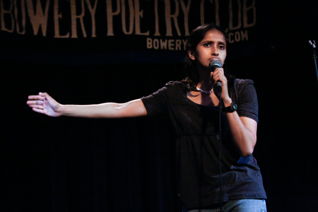
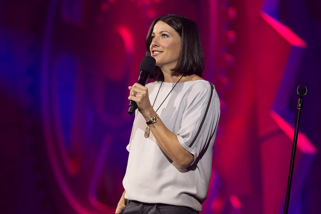
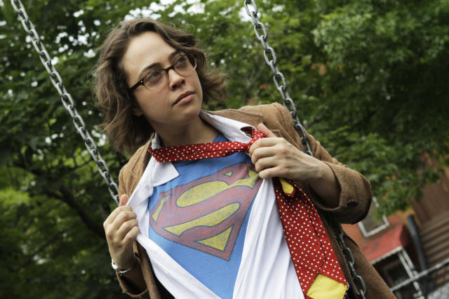

<!DOCTYPE html>
<html>
<head>
<style>

body {

  font-family: Helvetica;
    width:760px;
    margin-left: auto;
    margin-right: auto;
}

h1 {
  font-weight: normal;
  font-size: 51px;
  margin-bottom: 10px;
  text-align: center;
}

.byline, .date {
  margin: 10px 0;
  font-family: arial;
  font-weight: normal;
  text-align: center;
}

.meta-info {
  display: inline;
}


div.img {
    margin: 5px;
    padding: 5px;
    height: auto;
    width: auto;
    float: center;
    text-align: center;
}

  div.desc {
  text-align: center;
  font-weight: bold;
  font-size:12px;

  }

p {
  width:540px;
  margin: 10px auto;
  font-size:16px;
  line-height: 1.4em;
  text-align: left;
}


.author {
  font-weight: bold;
  color:#000;
}

.subhed {
  margin:40px 0 10px;
  text-align: center;
}

 .header-info {
  text-align: left;
  margin-bottom: 20px;
}

  h5.kicker {
font-weight: normal;
font-size: 18px;
margin: 10px 0;
text-align: center;
}

.meta-container {
  text-align: center;
}

.table {
  font-family: Helvetica;
  font-size: 13px;
  border-collapse: collapse;
  width:60%;
  margin-bottom: 20px;
  margin: 0 auto;

}

td {
  padding:5px 0;
  border-bottom: 1px solid #dedede;

  }

td, th {
  text-transform: uppercase;
  font-size: 11px;
  font-weight: normal;
  text-align: left;
  } 

.year-cell, .mcs-cell, .comics-cell, .headliners-cell {
  text-align: right;
  width:30px;
  padding-right: 30px;
  }

table {
  display: table; 
  border-collapse: separate;
  border-spacing: 2px;
  border-color: gray;
}

  .article {
  width: 540px;
  margin: 10px auto;
  font-size: 16px;
  line-height: 1.4em;
}


</style>
</head>


</html>


<html>
	<head>
		<link rel="stylesheet" type= "text/css" href= "style.css">
		<title>Kaitlyn Mitchell's Project</title> 
	</head>
<body>
	<div class="header info">
		<h1>Women in Comedy: Despite press attention, the numbers show little improvement</h1> 
	<div class="meta-container">
      <h6 class="meta-info byline">By <a class="author" href="http://www.kait.nyc/">Kaitlyn Mitchell</a></h6>
      <h6 class="meta-info date">Dec. 11, 2014</h6>
    </div>
    <h5 class="kicker">It's 2014. The percentage of women writing and performing comedy is comparable to the number of women in Congress (19%). We should be concerned.</h5>
    

    <div class="header-info">

      <div class="img">
      <a target="_blank" href="nancherla.jpg">
        
       </a>
       
      </div>

       </a>
        <div class="desc">Aparna Nancherla</div> 
      </div>


    	<div class="top-chart"></div>

    
    <p>Technically speaking, it's never been a better time to be a female comic, but man does it still suck a lot of the time. Anna Drezen, curator of the monthly <i>Open Michelle</i> all-female open mic at Upright Citizens Brigade puts it best: "No one considers you a legitimate contender. Being a woman is like showing up to prom in one of those screen-print tuxedo t-shirts. It's just seen as a tacky choice." But doggone it, those gals just keep at it.</p>

    <p>Stand-up comedy in New York has a stepladder hierarchy that goes from alternative open mic performers to regular headliners on the club circuit. It's difficult for a stand-up comic to become a headliner at the major comedy clubs unless they already have some notoriety from writing or performing on a nationally broadcast late night or sketch comedy TV show, such as <i>Saturday Night</i> Live or <i>Letterman</i>. It is very, very challenging for even a white male comic to advance through these ranks in less than five to ten years. "At four and a half years in, I should be at the same place that my male colleagues are," said Drezen.</p>

    <p>Due to the clear inequality, the state of women in comedy is a hot button issue in the press these days. But the press' finger pointing and "discussions" are not translating into concrete changes for female comics.</p>

    <p>Take my case study, scraped from exclusive data generously provided by <i>Caroline's on Broadway</i> comedy club in midtown Manhattan. Since 2011, the average number of female hosts, or MCs, at <i>Caroline's</i> has been 18.8%, while the female comics are onstage only 13.6% of the time, and female headliners make up a mere 8.1% of the comics that grace the stage. The amount of stage time given to an MC is far less than a headlining comic,  and MCs often do more crowd word than prepared jokes. It's a given that MCs aren't as respected as headliners. My results show that female MCs are 11% more common than female headliners at <i>Caroline's</i>.</p>

    <h3 class="subhed">Women Onstage at <i>Caroline's on Broadway</i>, 2011-Present:</h3>

    <table class="table">
      <thead>
        <tr>
          <th class="year-cell">Year</th>
          <th class="mcs-cell">MCs</th>
          <th class="comics-cell">Comics</th>
          <th class="headliners-cell">Headliners</th>
          
        </tr>
      </thead>
      <tbody>
        <tr class="firstRow">
          <td class="year-cell">2011</td>
          <td class="mcs-cell">20%</td>
          <td class="comics-cell">15%</td>
          <td class="headliners-cell">6%</td>
          
        </tr>
        <tr>
          <td class="year-cell">2012</td>
          <td class="mcs-cell">15%</td>
          <td class="comics-cell">11%</td>
          <td class="headliners-cell">10%</td>
        </tr>
        <tr>
          <td class="year-cell">2013</td>
          <td class="mcs-cell">16%</td>
          <td class="comics-cell">13%</td>
          <td class="headliners-cell">9%</td>
        </tr>
        <tr>
          <td class="year-cell">2014</td>
          <td class="mcs-cell">25%</td>
          <td class="comics-cell">16%</td>
          <td class="headliners-cell">8%</td>
        </tr>
        
      </tbody>
    </table>
    <br><br>

    <p>Between 2011 and 2014, the number of female acts at <i>Caroline's</i> has only increased by a miniscule amount across the board, despite the addition of several monthly female-only shows over the past two years, including <i>Ladies' Night with Robyn Schall</i> and <i>HERsterical</i>, as well as a <i>Women Aren't Funny: Debunking the Myth</i> panel during the 2014 New York Comedy Festival.</p>

    <div class="img">
      <a target="_blank" href="bonnie.htm">
        
       </a>
       
      </div>

      </a>
        <div class="desc">Bonnie McFarlane</div> 
      </div>

    <p>While female comics aren't opposed to participating in women-only shows (because who in their right mind would turn down a gig?), many comics, including Bonnie McFarlane, Liza Treyger, and Megan Gailey, are vehemently opposed to designating shows as "women only." Women in comedy want to be know as comics, not women comics, and rightfully so. But all-women shows and festivals do offer a safe space for women to try out jokes. Drezen says that she still gets emails from male comics complaining that <i>Open Michelle</i> only allows females onstage. Drezen replies to those emails with a thoughtful sentiment: "Good luck in the female-dominated industry of stand-up comedy."</p> 

    <h3 class="subhed">In Televison, It's Even Worse</h3>

    <p>The writer's rooms of almost every nationally broadcast late night comedy show and sketch show reflect the dismal numbers for funny women. Take, for example, liberal nighttime comedy shows <i>The Daily Show with John Stewart</i>, <i>The Colbert Report</i>, and <i>Last Week Tonight with John Oliver</i>: the combined percentage of female writers for all seasons of each of these shows is 15.7%. <i>Late Night with Seth Meyers</i> and <i>The Late Show with David Letterman</i> average out at only 14.5% female writers in the entire history of each show. Since its premiere in 1975, <i>Saturday Night Live</i> has seen an average of 21% of its writing staff represented by women (this season, which is the first to feature black female cast members, the numbers of female writers have increased to 30%). There are only two New York-based sketch comedy shows that currently have a writing staff that's over 50% female. Those shows are <i>Inside Amy Schumer</i> and <i>Broad City</i>, averaging out at 63.4% female writers between the two shows.</p>

    <h3 class="subhed">Women Writers on NY Late Night and Sketch Comedy TV Shows</i>, 2011-Present:</h3>


    <table class="table">
      <thead>
        <tr>
          <th class="show-cell">TV Show</th>
          <th class="all-cell">All Seasons</th>
          <th class="current-cell">Current Season</th>
          
        </tr>
      </thead>
      <tbody>
        <tr class="firstRow">
          <td class="show-cell">Saturday Night Live</td>
          <td class="all-cell">21%</td>
          <td class="current-cell">30%</td>
          
          
        </tr>
        <tr>
          <td class="show-cell">Late Show w/ David Letterman</td>
          <td class="all-cell">9%</td>
          <td class="current-cell">8%</td>
          
        </tr>
        <tr>
          <td class="show-cell">The Daily Show w/ John Stewart</td>
          <td class="all-cell">15%</td>
          <td class="current-cell">27%</td>
          
        </tr>
        <tr>
          <td class="show-cell">Late Night w/ Seth Meyers</td>
          <td class="all-cell">20%</td>
          <td class="current-cell">21%</td>

        </tr>
        <tr>
          <td class="show-cell">The Colbert Report</td>
          <td class="all-cell">12%</td>
          <td class="current-cell">0%</td>

        </tr>
        <tr>
          <td class="show-cell">Last Week Tonight w/ John Oliver</td>
          <td class="all-cell">63%</td>
          <td class="current-cell">20%</td>

        </tr>
        <tr>
          <td class="show-cell">Inside Amy Schumer</td>
          <td class="all-cell">50%</td>
          <td class="current-cell">60%</td>

        </tr>
        <tr>
          <td class="show-cell">Broad City</td>
          <td class="all-cell">63%</td>
          <td class="current-cell">63%</td>
          
        </tr>
        
      </tbody>
    </table>
    <br><br>

    <p>Bonnie McFarlane, director of the 2014 documentary <i>Women Aren't Funny</i>, was a writer on comedy shows when she lived in Los Angeles. The male executives and head writers for TV shows always say the same thing, said McFarlane: "There's no good funny female writers. If they saw a female name on the top of a packet, they'd be like, "Oh, brother, a woman." If you start off like that, that sketch packet has to be so fucking good to overcome their initial prejudice. Women don't stand a chance." McFarlane has appeared onstage at <i>Caroline's</i> six times since 2011, often appearing on the same bill as her husband, comic Rich Vos. The fact that fans who stop Vos in the street usually have no idea who McFarlane is was a running joke in <i>Women Aren't Funny</i>.</p>

    <div class="img">
      <a target="_blank" href="brito.htm">
        
       </a>
       
      </div>

      </a>
        <div class="desc">Janine Brito</div> 
      </div>

    <p>Janine Brito and Aparna Nancherla were writers and performers on the FXX show <i>Totally Biased with W. Kamau Bell</i>, which was cancelled in November 2013. Together, they created many a feminist skit on the short-lived show, yet the male bias was still felt in the writer's room. Once, the female writers pitched a sketch that satirized yogurt commercials marketed towards women. "The guys were like, 'Oh, is yogurt like a thing for women?' And we were like, 'Really!?' They had no idea what we were talking about," said Nancherla. "But there's a ton of yogurt commercials! It made me realize, it really does matter how many women are in a room." Brito MC'd at <i>Caroline's</i> once in the past four years, while Nancherla has MC'd on four separate ocassions since 2011.</p>

    <p>Despite the press' recent hyperawareness of women in comedy, club owners and TV show executives are exceptionally slow to respond. The fierce women who are forging the path agree: comedy truly is much, much harder than it looks.</p>

  </div>